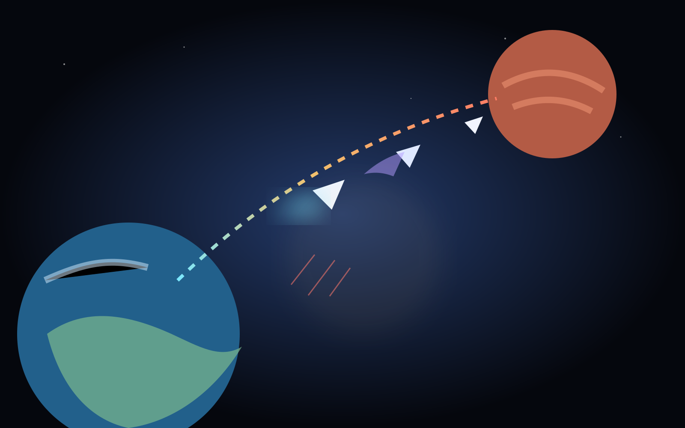

Evacuation
Humanity is moving out under pressure. The people behind the player matter mechanically, not only narratively.
An original cinematic co-op action game about evacuation, survival and the journey from a collapsing Earth to Mars. Players fight together while the remaining human population stays part of the game itself, not just the background story.

The game is built around the pressure of protecting a route from Earth toward Mars while the players fight through a hostile journey together.
Humanity is moving out under pressure. The people behind the player matter mechanically, not only narratively.
The game is designed around shared combat, survival and keeping the evacuation moving.
The visual identity leans into scale, motion, distance and a clear Earth-to-Mars journey.
The game follows a multi-stage escape: surviving the attack on Earth, launching, fighting through space, approaching Mars and making the final landing.
The intended feeling is direct and cinematic: arcade combat with a persistent sense that the people you save are part of the stakes.